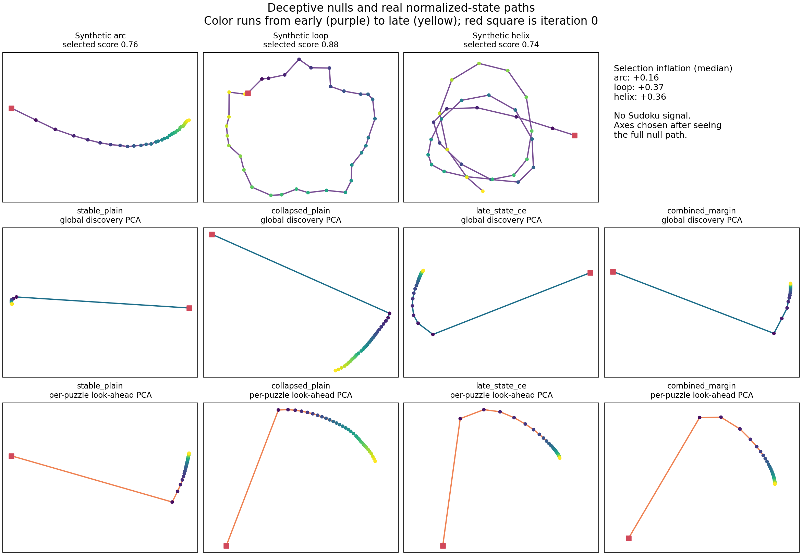
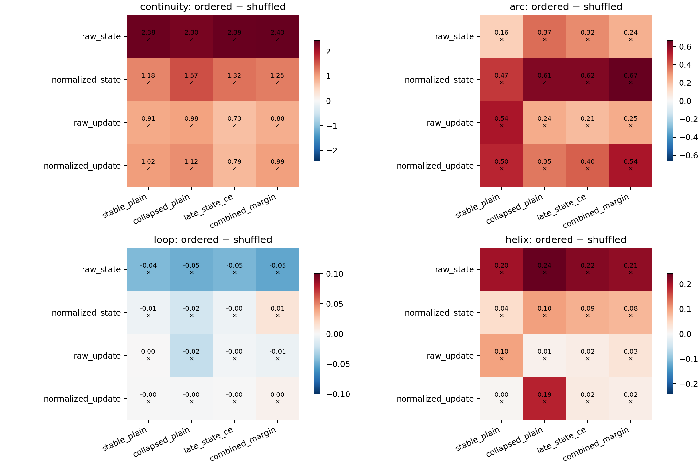
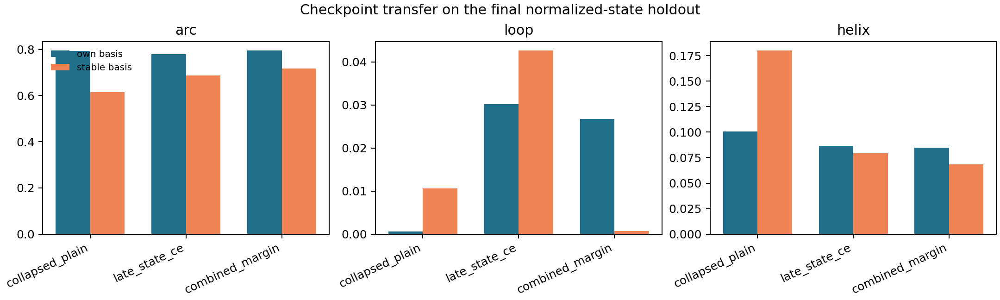

The plots illustrate the preregistered held-out measurements. Visual appeal is not an acceptance criterion.
| Claim | Verdict | Checkpoints meeting representation rule |
|---|---|---|
| shared_arc | FAIL | none |
| shared_helix | FAIL | none |
| shared_loop | FAIL | none |
| temporal_continuity | PASS | stable_plain, collapsed_plain, late_state_ce, combined_margin |



Exact values: robustness_metrics.json. Frozen criteria: acceptance_criteria.json.